Formación de Monitora de Yoga Infantil
Una experiencia presencial transformadora de 2 días. Aprende a guiar a la infancia con seguridad, creatividad y un enfoque pedagógico-terapéutico único.
No se requiere experiencia previa.
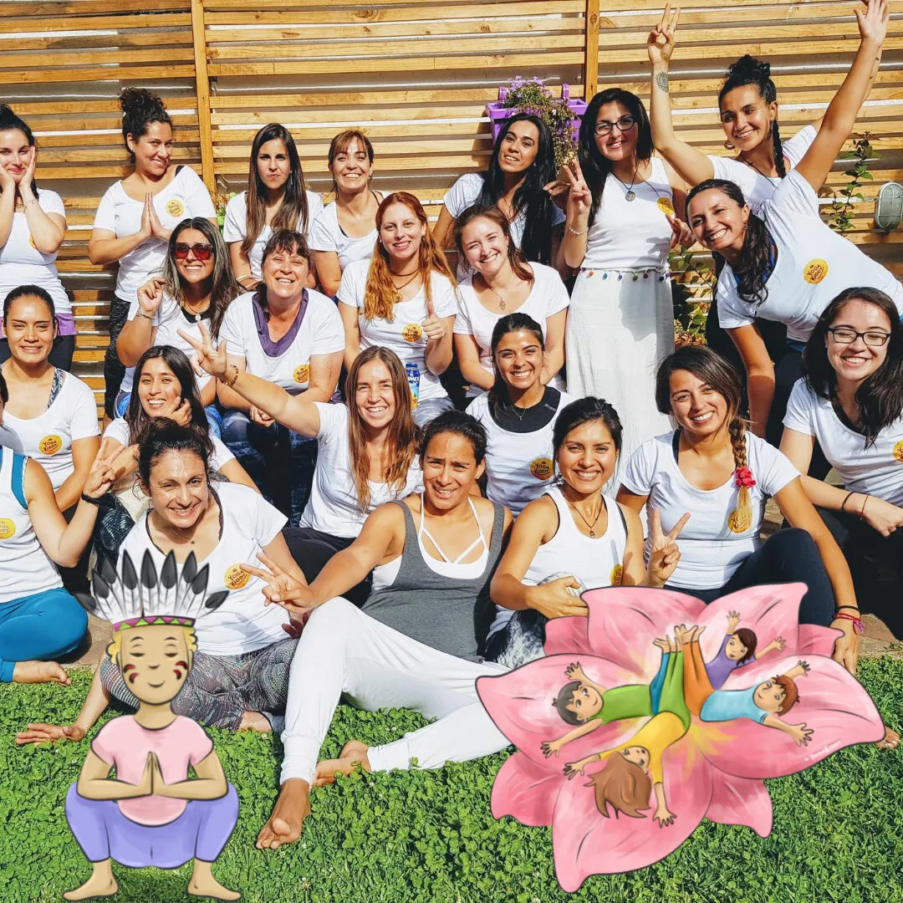
Mucho más que posturas: aprende a sembrar semillas de calma y bienestar.
Esta formación es una invitación a redescubrir tu capacidad de conectar con los niños. Te entregamos una metodología probada, recursos lúdicos y la estructura necesaria para que tus clases sean un éxito rotundo desde el primer día.
¿Dónde? ¿Cuándo? Precios
Los precios incluyen la formación completa de 2 días (18 horas) + material exclusivo digital YogaKiddy.
CHILE 🇨🇱
Santiago: 21 y 22 Nov 2026 (9h a 18h)
Academia Chilena del Yoga: Eliodoro Yáñez 820, ProvidenciaViña del Mar: 01 y 02 Agosto 2026 (9h - 18h)
Centro Sukha: 1 Oriente 450, Viña del Mar$245.000 CLP
MÉXICO 🇲🇽
CDMX: 06 y 07 Noviembre 2026 (9h - 18h)
Jardines en la Montaña, Tlalpan$5.000 MXN
BÉLGICA 🇧🇪
Bruselas: 3 - 4 de octubre de 2026 (9h - 18h)
Jodoigne: 3 y 4 de abril de 2027 (9h - 18h)
350 EUR
¿Buscas otras modalidades o especializaciones?
Descubre nuestros talleres y formaciones complementarias, como el Yoga en el Aula (Online), ideal para integrar el yoga en la escuela.
Ver Yoga en el Aula OnlineUna inmersión total en el mundo del Yoga Infantil
18 horas de entrenamiento intensivo repartidas en un fin de semana mágico.
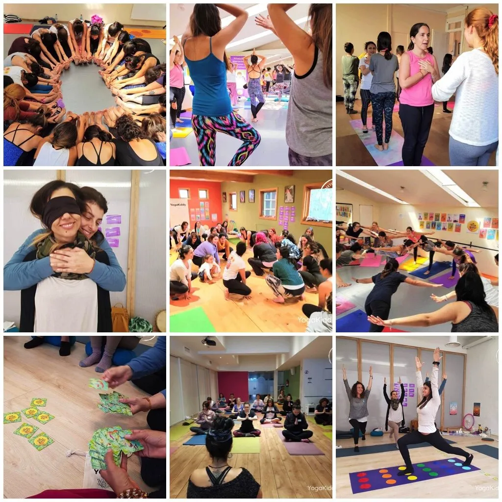
¿Qué aprenderás?
Descubriremos qué significa realmente el yoga para la infancia hoy. Entenderemos las etapas del desarrollo humano y cómo adaptar cada concepto de forma lúdica y respetuosa.
Te revelamos nuestra estructura de sesión "Paso a Paso" que garantiza el éxito. Aprenderás a gestionar el grupo, mantener el foco y equilibrar la energía entre el movimiento y la calma. Además, profundizaremos en el rol y las cualidades de la monitora exitosa.
Exploraremos Asanas (posturas) creativas, Pranayamas (respiración) divertidos y técnicas de relajación/meditación que los niños adoran. ¡Práctica directa y vivencial!
Cómo usar de forma profesional el Bingo, los Cubos y las Cartas YogaKiddy. Incorporación de música, mantras, telas y otros elementos que despiertan la curiosidad.
Diseño de clases específicas para 3-7 años (enfoque narrativo) y 7-14 años (enfoque de desafío y autonomía). Incluye demostraciones prácticas reales.
Un Kit Digital Profesional para tu exito
No estarás sola después de la formación. Te equipamos con material digital profesional, valorado por miles de educadoras en todo el mundo.
- 📘Manual Maestra: 40+ páginas con teoría profunda y planificaciones listas.
- 🤹Historias Inspiradoras: 5 sesiones guiadas e ilustradas.
- 🎭Audio-Calma: 6 meditaciones y relajaciones en formato MP3/PDF.
- 🎴Juego de Cartas: El mazo de 54 cartas YogaKiddy para imprimir.
- 🎲Bonus Lúdicos: Cubos, Bingo, Saludo al Sol y póster exclusivo.
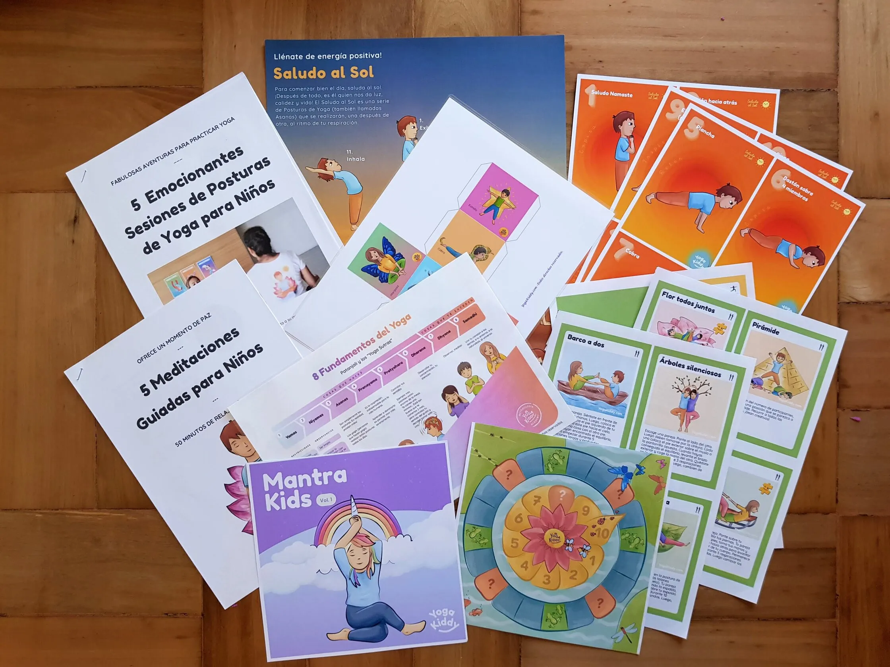
Diploma de participación "YogaKiddy Academy Internacional"
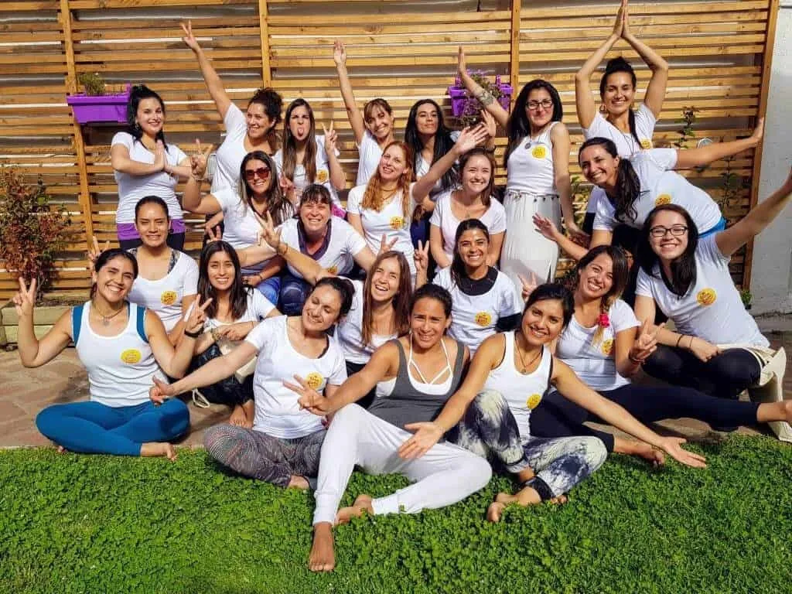
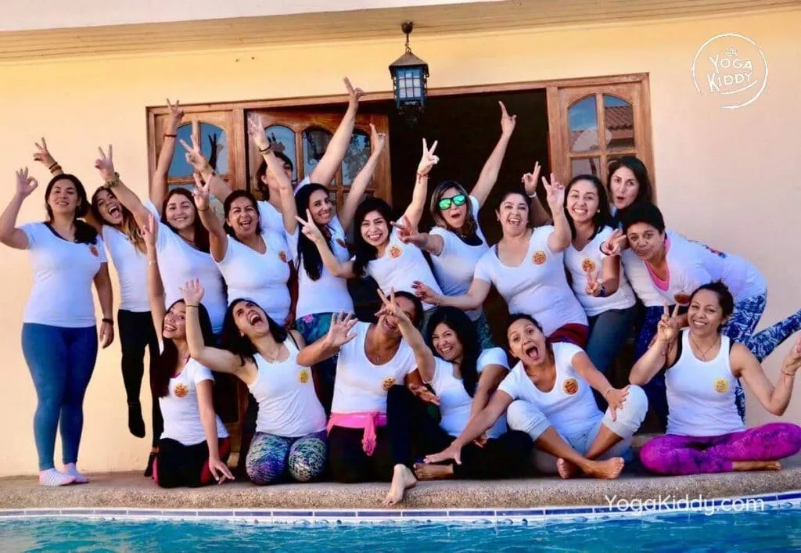
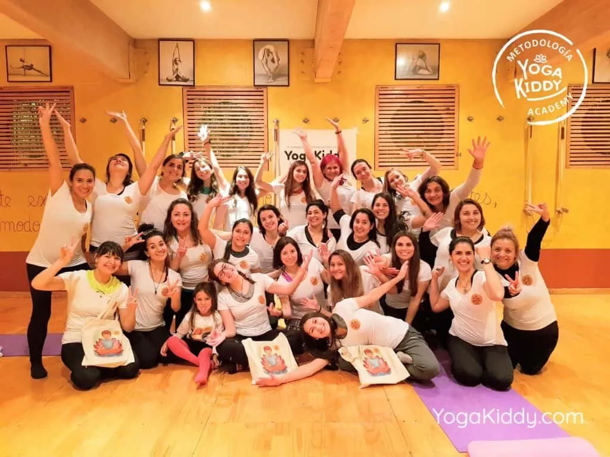
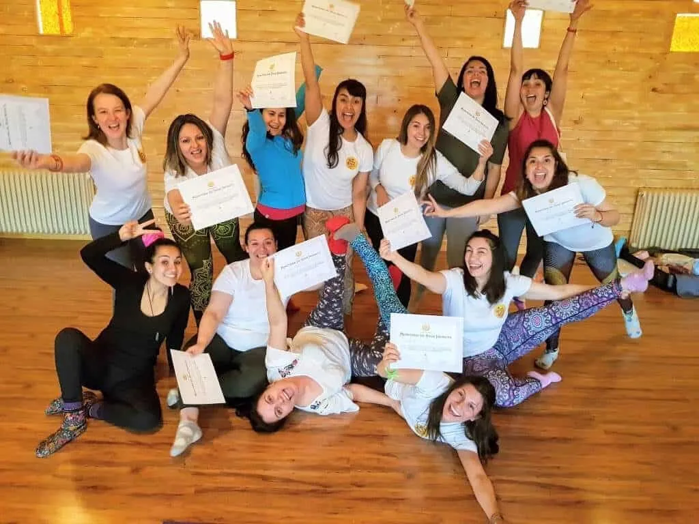
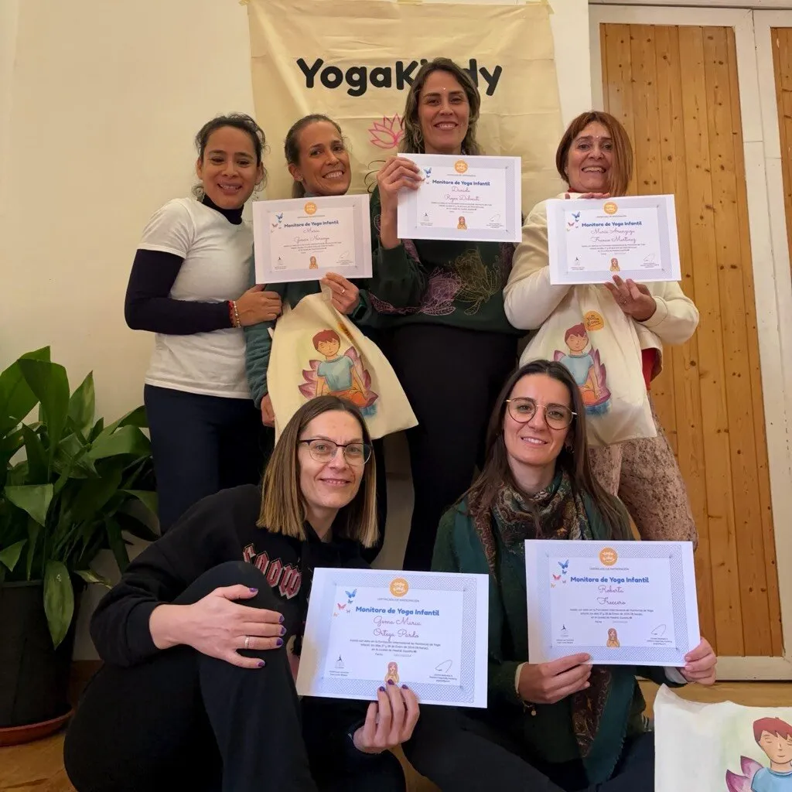
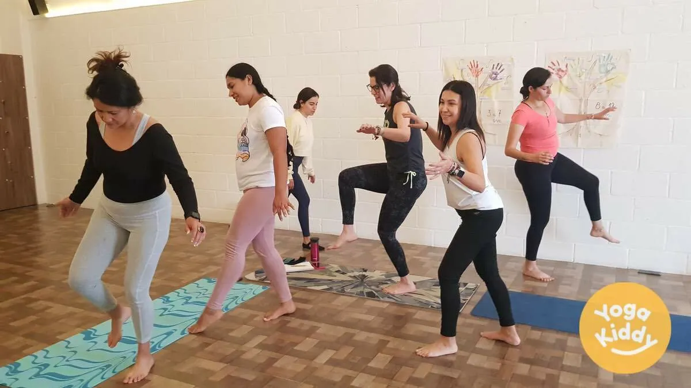
Recibirás el respaldo oficial de YogaKiddy Academy y el Centro Santosha de Bélgica (40 años de trayectoria).
Acompañamiento humano y profesional
En YogaKiddy, no solo te formamos, te recibimos en una familia con años de trayectoria.
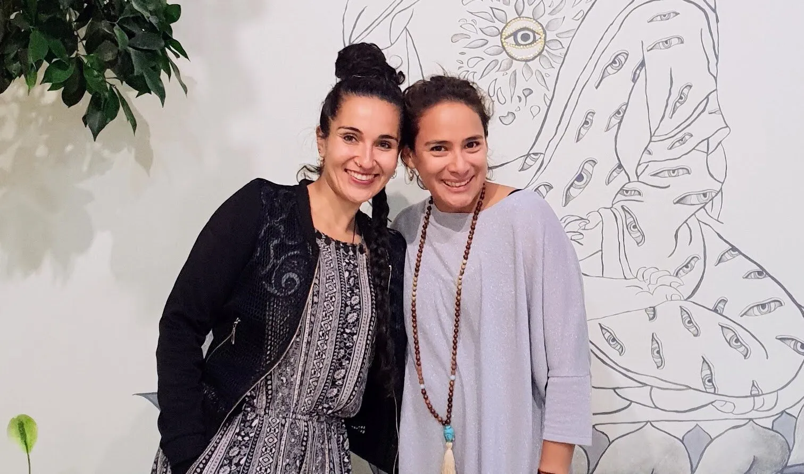
Peggysue & Carmen
Peggysue: Psicopedagoga
y experta en Danzaterapia.
Carmen: Fundadora de YogaKiddy Academy y visionaria
del yoga infantil internacional.
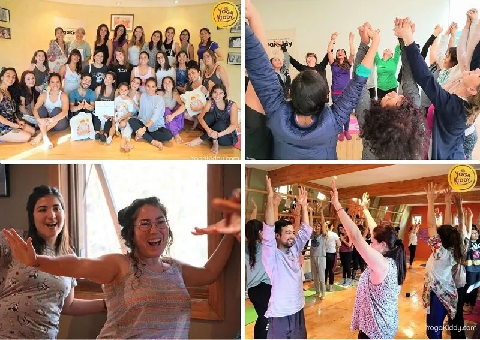
Lo que dicen las alumnas
Resolvemos tus dudas
¡Absolutamente SÍ! Esta formación está abierta a toda persona que sienta el llamado de trabajar con la infancia. Recibimos psicólogas, profesionales de la salud, madres, abuelas y entusiastas que desean herramientas de bienestar para su entorno.
No te preocupes. Partimos desde las bases. Lo más importante es tu motivación y apertura para aprender una metodología lúdica. No buscamos posturas perfectas, sino conexiones profundas.
En el mundo del yoga, y especialmente en yoga infantil, no existe una certificación oficial única o estatal que regule universalmente este tipo de formación. Por eso, la validez real de un diploma se sostiene en la seriedad de la escuela, la calidad de sus contenidos, la experiencia de sus formadoras y la trayectoria de sus alumnas.
Nuestra mayor garantía es el camino recorrido. Contamos con cientos de formaciones realizadas y miles de alumnas en México, Perú, Chile, Uruguay, España, Bélgica y Francia. Este diploma de "YogaKiddy Academy Internacional" cuenta además con el respaldo del Centro Santosha de Bélgica, una escuela fundada hace 40 años.
En otras palabras, esta certificación acredita que completaste una formación especializada en la metodología YogaKiddy y que cuentas con herramientas concretas para guiar sesiones de yoga infantil con una mirada lúdica, pedagógica y respetuosa de la infancia.